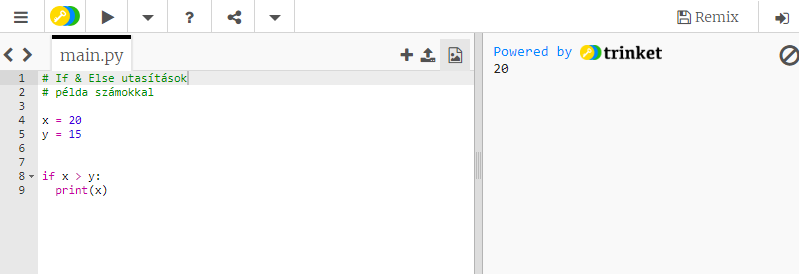
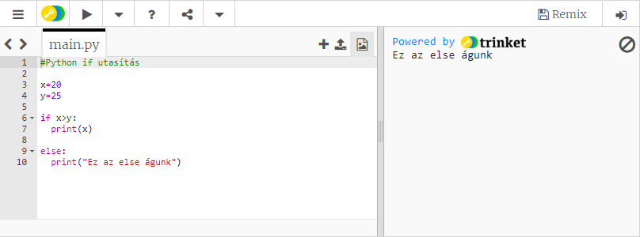
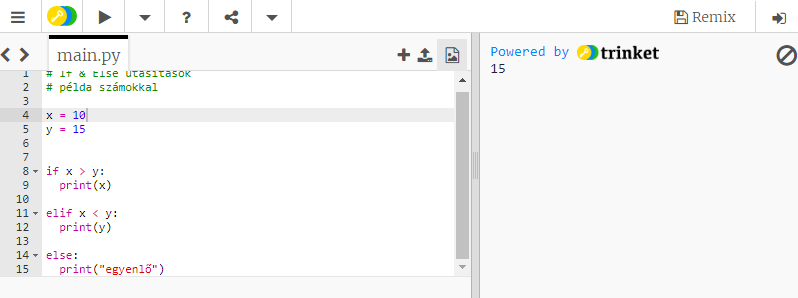

Ahhoz hogy elkezdjunk Pythonban egy döntési szálat írni, a legalapvetőbb része maga az if.
Először is leírjuk az if szót, majd megadunk egy feltételt, aminek igaznak kell lennie, hogy a feltétel után következő kódsor lefuthasson.
Tehát egy alapvető if utasítás esetében az if szót egy feltétel követi, majd egy kettőspont, ami után Entert kell nyomnunk, és a következő sort behúzni.
Ebben a példában azt mondjuk, hogy x = 20 és y = 15, majd azt állítjuk, hogy ha az x nagyobb mint az y, nyomtassuk ki az x értékét. Tehát azt mondjuk, hogy ha az x értéke nagyobb az y értékénél,
és mindkettő változó értéke szám, akkor lefut egy kód, ami kinyomtatja a 20-as számot. Az alábbi példakód ezt mutatja.
Mi van akkor, ha valami mást akarunk csinálni, ha a feltétel nem teljesül? Ilyenkor kell az else utasítást használni.
Ha az x kisebb mint y, akkor egy másik kódrészletet fogunk futtatni. Tehát ha nem teljesül a feltétel, akkor a behúzott utasításon kívüli másik feltételünk kódja fut majd le.
Ahogy láthatod, a fenti feltétel (x>y) nem teljesül, ezért a program inkább az else utasításban lévő kódot fogja futtatni, ahol az “Ez az else águnk” string található, ami kiíratásra is kerül.
Ha már van egy if parancsunk és még nem zárjuk le a szálat else-vel akkor kell elif-et használnunk.
Az alábbi példán azt látjuk, hogy megadtunk két változót aminek értékek adtunk.
Majd megvizsgáljuk azt, hogy nagyobb, kisebb vagy egyenlő, és mivel három vizsgálati szempont van elif-et kell használni.
